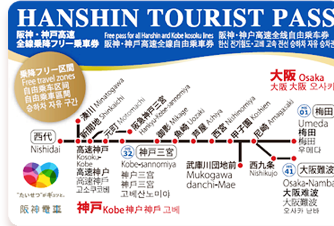

FESTIVAL
FESTIVAL
PUBLIC_TRAFFIC
PUBLIC_TRAFFIC
OSAKA
OSAKA
TOKYO
TOKYO
HUKUOKA
HUKUOKA
FOOD
FOOD
1일권 (2300엔)
오사카 시영 지하철·뉴트램·버스·사철 이용 가능/JR라인 이용 불가능
2일권 (3000엔)
오사카 시영 전철·뉴트램·버스 이용 가능/JR라인, 사철 이용불가능
35개 관광 명소 무료 및 25개 시설/27개 상점에서 할인 및 특전
2일권 (4000엔) / 3일권 (5200엔)
오사카,교토, 고베, 나라, 와카야마 등 간사이 지역의 지하철, 전철, 버스 이용 가능
JR라인, 리무진 버스, 고속 버스 유니버셜 스튜디오 재팬 버스 이용 불가능
오사카 주요 관광지할인 특전
1일권 (700엔) / 2일권 (1200엔)
고베, 다카라즈카, 교토 본선(우메다역-교토, 고베로 이동하는 한큐라인 전철) 이용 가능
오사카 시영 지하철, 한큐라인을 제회한 사철, JR라인 이용 불가능

1일권 (700엔)
고베 전선(오사카 난바-고베로 이동하는 한신라인 전철) 이용 가능
오사카 시영 지하철, 한신라인을 제외한 사철, JR라인 이용 불가능
주중 (800엔) / 주말(600엔)
오사카 시영 전철, 뉴트램, 버스 무제한 이용 가능
JR라인, 사철 이용 불가능
오사카 주요 관광지할인 특전
1일권 (1500엔)
라피트 특급열차 편도(간사이공항-난바역), 오사카 시영 지하철, 뉴트램, 버스 이용 가능
JR라인, 사철 이용 불가능
오사카 관광 명소 32곳 할인